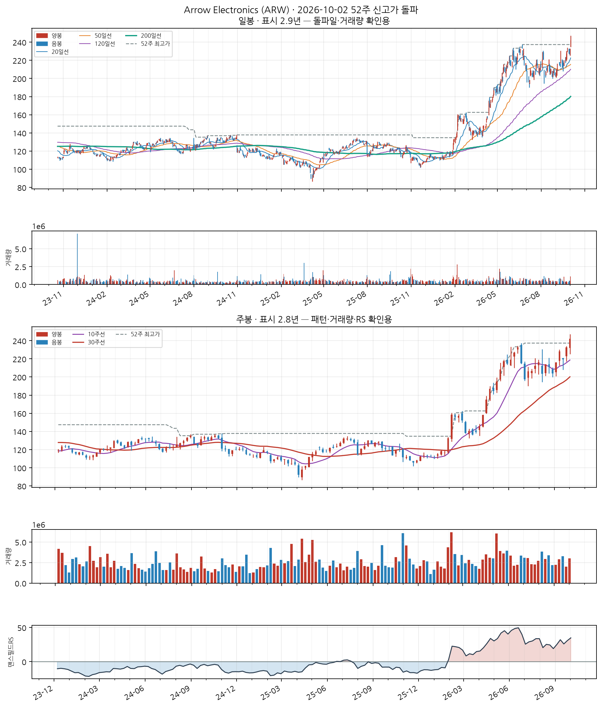
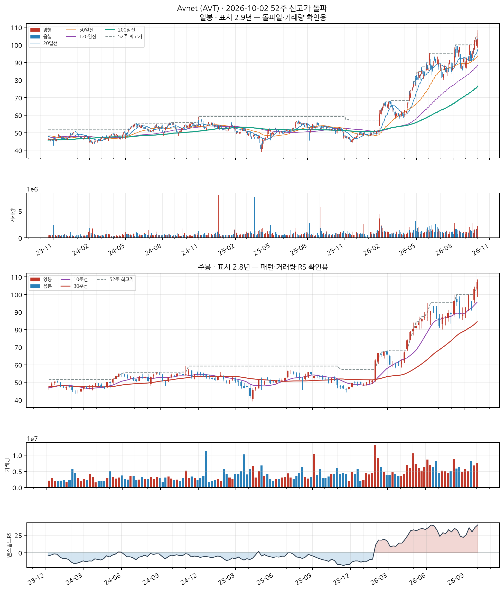
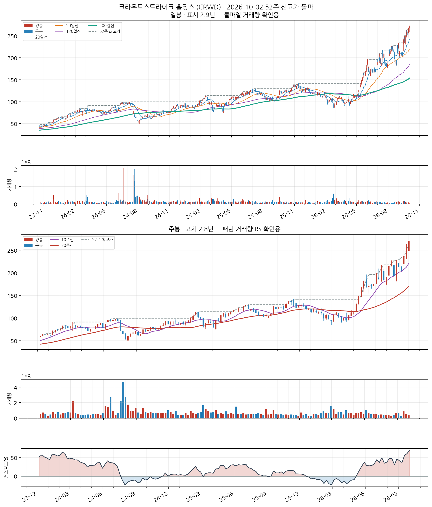
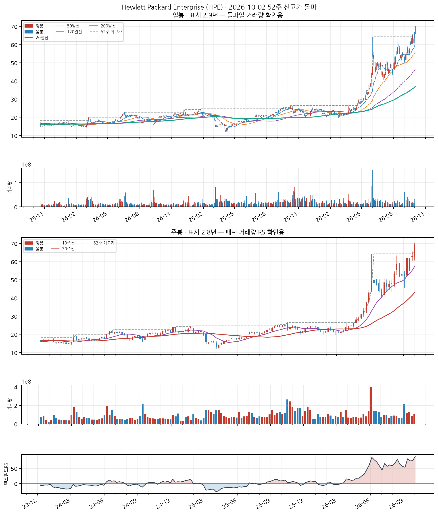
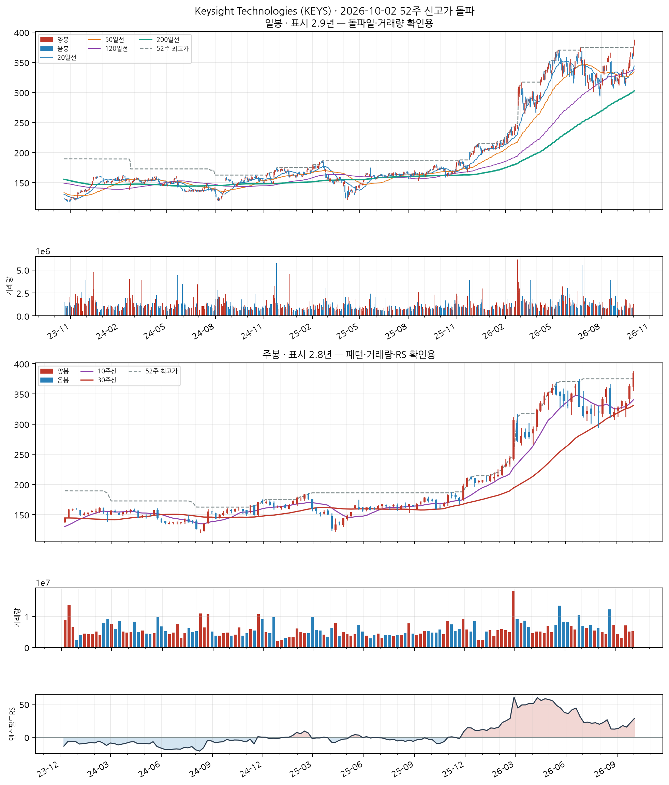
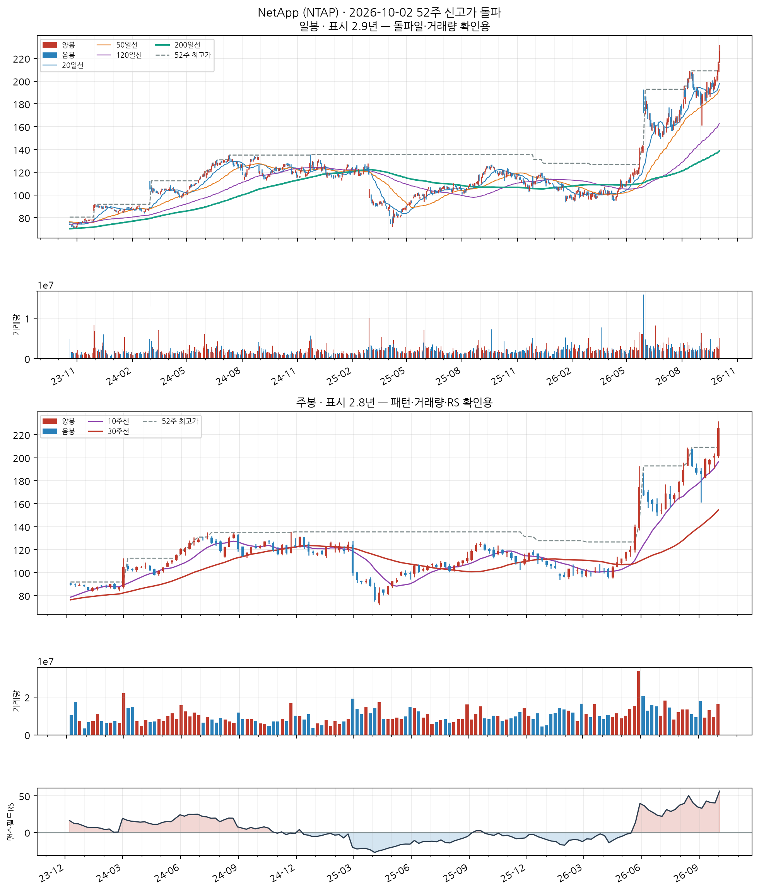
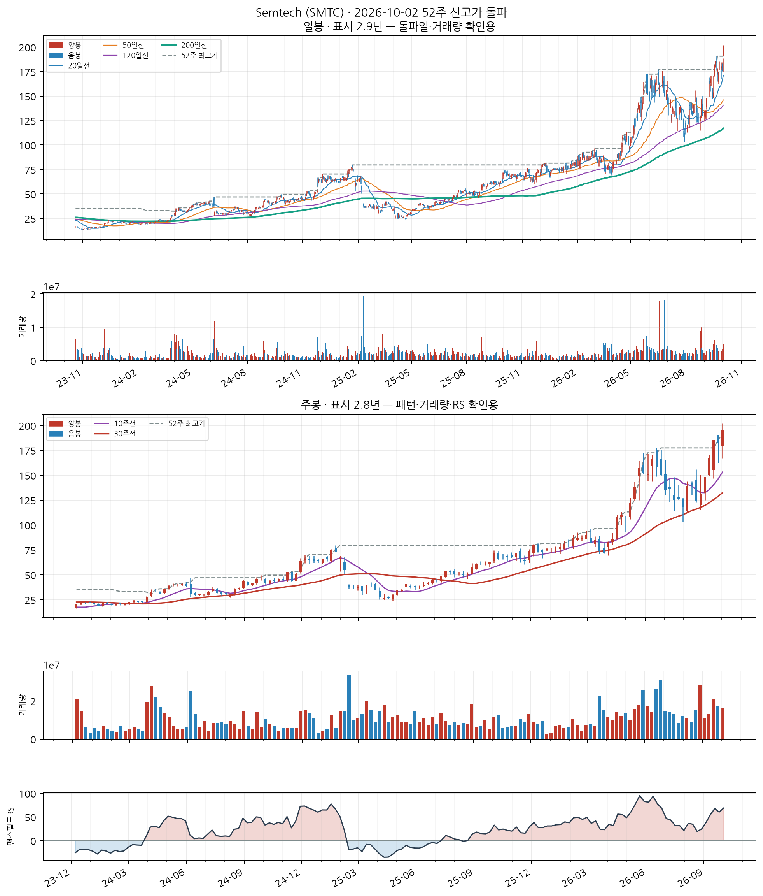

이 전략의 진입 조건
- 52주 신고가 근접·돌파 — 종가가 최근 252거래일(≈1년) 최고가의 '근접 허용폭' 이내일 것 (기본 설정은 하한 0% = 신고가 이상)
- 장기 추세 확인 — 종가가 200일 이동평균 위에 있고, 그 이동평균 자체도 상승 중일 것 (이미 꺾인 종목의 일시 반등을 걸러냅니다)
- 과열 하드컷 — 최근 5거래일 상승률이 40% 이상이면 제외 (급등 직후 고점을 잡는 것을 막습니다)
자세히 — 한계와 주의사항
George & Hwang(2004) <The 52-Week High and Momentum Investing>의 앵커링 이론에 근거합니다 — 투자자가 52주 최고가를 심리적 기준가로 삼아 그 근처에서 매수를 주저하는 편향이 풀리며 추가 상승이 이어진다는 것입니다.
의도적으로 '신선도'는 조건에 넣지 않았습니다. 이미 오래 상승 중인 리더주도 계속 포착하는 것이 이 스캐너의 목적입니다(신선도에 집중하는 쪽은 Launch Pad).
⚠️ 이 전략은 11년 검증에서 코스피를 이기지 못했습니다. CAGR 7.19% · MDD −85.6% (코스피 매수후보유 10.77% · −43.9%). reports/vs_kospi.md의 결론은 "쓸 수 있는 우위가 없다"입니다. 그럼에도 발행하는 것은 신호 자체를 참고 자료로 쓰기 위해서지, 성과가 검증돼서가 아닙니다.
예전 설명에 나오던 +261.22% 같은 수치는 당일 종가 매수를 가정한 값이라 실현 불가능합니다(종가는 장 마감에 확정됩니다). 지금 백테스트는 신호 다음 거래일 시가로 체결합니다.
Arrow Electronics (ARW)
신규
NASDAQ
Information Technology
업종 참고: RS 평균 72/99(업종 중 상위 1%) · 오늘 신호 20건 · 업종 평균이 나스닥종합 대비 +17.6%p(126일), 종목별 편차 ±51%p
🧪 자체 섹터 분류(실험적, 참고용): Information Technology (Avnet·Arrow Electronics 등 10종목)
섹터 내 RS 순위: 2/10위 (RS 93/99)
섹터 1~3위: Avnet(94), Arrow Electronics(93), 퀄컴(92)
※ 자체 상관관계 계산(최근 1년) — 검증 시 기준업종 11개 중 8개 정확. 주 단위로 구성종목이 일부 바뀔 수 있음(주간 일치도 실측 0.53)
종가 $242.01
고점대비 +2.0%6개월 +65.9%갱신 1회거래량비 2.1x

📐 차트 패턴 판정: 후보 없음 후보 없음 판정 기준(PDF)
세 패턴 모두 필수 조건을 채운 후보가 없다(가장 가까운 컵위드핸들 후보: 구조 독립성: 부모 컵(오른쪽 림 2026-06-18)의 핸들 하락(저점 2026-07-02)을 새 컵의 왼쪽 절반으로 재분할한 후보 — 자체 핸들이 아직 없다, 독립된 새 구조의 증거가 없다).
가장 강한 반증 컵위드핸들: 구조 독립성: 부모 컵(오른쪽 림 2026-06-18)의 핸들 하락(저점 2026-07-02)을 새 컵의 왼쪽 절반으로 재분할한 후보 — 자체 핸들이 아직 없다, 독립된 새 구조의 증거가 없다; 이중바닥: 두 저점 일치: 저점 차이 30.8% — 같은 지지대로 보기 어려움(10% 초과)
경쟁 후보·더 단순한 설명 더 단순한 설명: 최근 26주 상승 추세 지속(+65.9%) — 베이스 없음
추가로 필요한 데이터 장중 고저 기준 깊이(여기 수치는 주봉 종가 기준)
패턴만으로 매수 추천이나 목표 달성 확률을 만들지 않습니다. 수치 기준은 잠정치이며 라벨 데이터로 검증되지 않았습니다.
CC — 분기 실적 성장 양호
2026 분기(10-Q) · 순이익 +45.3% · EPS +46.5% · 매출 +31.8%
SEC EDGAR(10-Q/10-K) 기준 · 분기 단독 전년동기 대비 · 직전 분기보다 성장률이 낮아짐(감속) — 오닐 C 기준으로 한 단계 낮춤
AA — 연간 실적 성장 보통
2025 연간(10-K) · 순이익 +45.7% · EPS +49.9% · 매출 +10.5%
SEC EDGAR(10-Q/10-K) 기준 · 연간 전년동기 대비 · 최근 3년 연속 증가는 아님 — 오닐 A 기준 미충족으로 한 단계 낮춤
NN — 신고가·모멘텀 우수
고점대비 +2.0% · 최근 20일 중 1회 갱신 · 6개월 모멘텀 +65.9%
SS — 수급(거래량) 우수
20일 평균 대비 2.10배
유통주식수·순매수 데이터는 미보유 (거래량으로만 근사)
LL — 주도주(상대강도) 우수
RS 등급 93/99 (126거래일 ≈ 6개월 기준 · 유니버스 952종목 중 백분위) · 지수대비 +36.0%p
상위 시가총액 유니버스 기준 — KRX 전체 대비 백분위 아님 · 오닐의 RS Rating은 52주 기준이지만 여기는 126거래일로, 같은 리포트의 6개월 모멘텀과 기간을 맞춘 값이다(원전과 다름)
II — 기관·외국인 수급 데이터 없음
미국 종목은 기관 수급 데이터 소스 없음 (SEC Form 13F는 최대 45일 지연되는 분기 스냅샷이라 부적합)
MM — 시장방향 양호
IXIC 지수가 60일선 위
**오닐의 M(분산일·추종일 계수)이 아니라 지수의 이동평균 상회 여부**를 쓴 대용값이다 · 실제 매매 필터로는 미적용(표시 전용) — 종목 선별보다 지수 자체 타이밍이 더 효율적이라는 자체 검증 결과 있음 (reports/vs_kospi.md)
Information Technology
업종 참고: RS 평균 72/99(업종 중 상위 1%) · 오늘 신호 20건 · 업종 평균이 나스닥종합 대비 +17.6%p(126일), 종목별 편차 ±51%p
🧪 자체 섹터 분류(실험적, 참고용): Information Technology (Avnet·Arrow Electronics 등 10종목)
섹터 내 RS 순위: 1/10위 (RS 94/99)
섹터 1~3위: Avnet(94), Arrow Electronics(93), 퀄컴(92)
※ 자체 상관관계 계산(최근 1년) — 검증 시 기준업종 11개 중 8개 정확. 주 단위로 구성종목이 일부 바뀔 수 있음(주간 일치도 실측 0.53)
종가 $106.94
고점대비 +2.3%6개월 +72.8%갱신 3회거래량비 1.6x

📐 차트 패턴: 약한 유사 — 이중바닥 돌파 확인 확신 낮음 판정 기준(PDF)
두 저점(82.18/88.63) 뒤 중간 고점 96.53를 종가로 넘었다.
가장 강한 반증 선행 추세: 선행 추세가 상승(+83.8%) — 상승 중 눌림일 수 있어 반전형 전제가 없다
경쟁 후보·더 단순한 설명 더 단순한 설명: 선행 하락이 없어 반전형이 아니라 상승 추세 중 눌림(조정)일 수 있다
측정표 (주봉 종가 기준, 판정일 2026-10-02 이후 데이터 미사용)
조건별 판정
- 미충족 선행 추세 — 선행 추세가 상승(+83.8%) — 상승 중 눌림일 수 있어 반전형 전제가 없다
- 부분충족 두 저점 일치 — 저점 차이 7.3% — 6% 초과
- 충족 중간 반등 — 중간 반등 17.5% ≥ 8%
- 충족 기간 — 베이스 15주 ≥ 7주
- 충족 깊이 — 베이스 깊이 10.2% ≤ 40%
- 충족 저점2 매도 약화 — 저점2 부근 거래량 = 저점1 부근의 0.93배
- 충족 최근성 — 돌파 주(2026-09-11)가 3주 전
- 충족 넥라인 돌파 — 2026-09-11 주 종가 99.63 > 확인선 — 돌파 후 3주 경과
- 미충족 돌파 거래량 — 돌파 주 거래량 = 직전 10주 평균의 0.89배 (기준 1.4배)
추가로 필요한 데이터 장중 고저 기준 깊이(여기 수치는 주봉 종가 기준)
패턴만으로 매수 추천이나 목표 달성 확률을 만들지 않습니다. 수치 기준은 잠정치이며 라벨 데이터로 검증되지 않았습니다.
CC — 분기 실적 성장 양호
2026 분기(10-Q) · 순이익 +7.3% · EPS +12.9% · 매출 +33.9%
SEC EDGAR(10-Q/10-K) 기준 · 분기 단독 전년동기 대비 · 직전 분기보다 성장률이 높아짐(가속)
AA — 연간 실적 성장 보통
2026 연간(10-K) · 순이익 +39.2% · EPS +45.8% · 매출 +24.5%
SEC EDGAR(10-Q/10-K) 기준 · 연간 전년동기 대비 · 최근 3년 연속 증가는 아님 — 오닐 A 기준 미충족으로 한 단계 낮춤
NN — 신고가·모멘텀 우수
고점대비 +2.3% · 최근 20일 중 3회 갱신 · 6개월 모멘텀 +72.8%
SS — 수급(거래량) 우수
20일 평균 대비 1.58배
유통주식수·순매수 데이터는 미보유 (거래량으로만 근사)
LL — 주도주(상대강도) 우수
RS 등급 94/99 (126거래일 ≈ 6개월 기준 · 유니버스 952종목 중 백분위) · 지수대비 +41.9%p
상위 시가총액 유니버스 기준 — KRX 전체 대비 백분위 아님 · 오닐의 RS Rating은 52주 기준이지만 여기는 126거래일로, 같은 리포트의 6개월 모멘텀과 기간을 맞춘 값이다(원전과 다름)
II — 기관·외국인 수급 데이터 없음
미국 종목은 기관 수급 데이터 소스 없음 (SEC Form 13F는 최대 45일 지연되는 분기 스냅샷이라 부적합)
MM — 시장방향 양호
IXIC 지수가 60일선 위
**오닐의 M(분산일·추종일 계수)이 아니라 지수의 이동평균 상회 여부**를 쓴 대용값이다 · 실제 매매 필터로는 미적용(표시 전용) — 종목 선별보다 지수 자체 타이밍이 더 효율적이라는 자체 검증 결과 있음 (reports/vs_kospi.md)
크라우드스트라이크 홀딩스 (CRWD)
신규
NASDAQ
Information Technology
업종 참고: RS 평균 72/99(업종 중 상위 1%) · 오늘 신호 20건 · 업종 평균이 나스닥종합 대비 +17.6%p(126일), 종목별 편차 ±51%p
🧪 자체 섹터 분류(실험적, 참고용): Information Technology (Okta, Inc.·크라우드스트라이크 홀딩스 등 15종목)
섹터 내 RS 순위: 2/15위 (RS 98/99)
섹터 1~3위: Okta, Inc.(99), 크라우드스트라이크 홀딩스(98), 데이터도그(98)
※ 자체 상관관계 계산(최근 1년) — 검증 시 기준업종 11개 중 8개 정확. 주 단위로 구성종목이 일부 바뀔 수 있음(주간 일치도 실측 0.53)
종가 $270.04
고점대비 +0.3%6개월 +170.6%갱신 5회거래량비 0.5x

📐 차트 패턴 판정: 후보 없음 후보 없음 판정 기준(PDF)
세 패턴 모두 필수 조건을 채운 후보가 없다(가장 가까운 컵위드핸들 후보: 깊이: 컵 깊이 65.8% — 기준 12%~33%(고변동 최대 50%)를 벗어남).
가장 강한 반증 컵위드핸들: 깊이: 컵 깊이 65.8% — 기준 12%~33%(고변동 최대 50%)를 벗어남
경쟁 후보·더 단순한 설명 더 단순한 설명: 최근 26주 상승 추세 지속(+170.6%) — 베이스 없음
추가로 필요한 데이터 장중 고저 기준 깊이(여기 수치는 주봉 종가 기준)
패턴만으로 매수 추천이나 목표 달성 확률을 만들지 않습니다. 수치 기준은 잠정치이며 라벨 데이터로 검증되지 않았습니다.
CC — 분기 실적 성장 양호
2027 분기(10-Q) · 순이익 흑자전환($-78M→$+5.3M) · EPS 흑자전환($-0.3→$+0.0) · 매출 +25.8%
SEC EDGAR(10-Q/10-K) 기준 · 분기 단독 전년동기 대비 · 직전 분기보다 성장률이 낮아짐(감속) — 오닐 C 기준으로 한 단계 낮춤
AA — 연간 실적 성장 미흡
2026 연간(10-K) · 순이익 적자확대($-19M→$-163M) · EPS 적자확대($-0.1→$-0.7) · 매출 +21.7%
SEC EDGAR(10-Q/10-K) 기준 · 연간 전년동기 대비 · 최근 3년 연속 증가는 아님 — 오닐 A 기준 미충족으로 한 단계 낮춤
NN — 신고가·모멘텀 우수
고점대비 +0.3% · 최근 20일 중 5회 갱신 · 6개월 모멘텀 +170.6%
SS — 수급(거래량) 미흡
20일 평균 대비 0.54배
유통주식수·순매수 데이터는 미보유 (거래량으로만 근사)
LL — 주도주(상대강도) 우수
RS 등급 98/99 (126거래일 ≈ 6개월 기준 · 유니버스 952종목 중 백분위) · 지수대비 +133.1%p
상위 시가총액 유니버스 기준 — KRX 전체 대비 백분위 아님 · 오닐의 RS Rating은 52주 기준이지만 여기는 126거래일로, 같은 리포트의 6개월 모멘텀과 기간을 맞춘 값이다(원전과 다름)
II — 기관·외국인 수급 데이터 없음
미국 종목은 기관 수급 데이터 소스 없음 (SEC Form 13F는 최대 45일 지연되는 분기 스냅샷이라 부적합)
MM — 시장방향 양호
IXIC 지수가 60일선 위
**오닐의 M(분산일·추종일 계수)이 아니라 지수의 이동평균 상회 여부**를 쓴 대용값이다 · 실제 매매 필터로는 미적용(표시 전용) — 종목 선별보다 지수 자체 타이밍이 더 효율적이라는 자체 검증 결과 있음 (reports/vs_kospi.md)
Hewlett Packard Enterprise (HPE)
신규
NASDAQ
Information Technology
업종 참고: RS 평균 72/99(업종 중 상위 1%) · 오늘 신호 20건 · 업종 평균이 나스닥종합 대비 +17.6%p(126일), 종목별 편차 ±51%p
🧪 자체 섹터 분류(실험적, 참고용): Information Technology (델 테크놀로지스·Hewlett Packard Enterprise 등 7종목)
섹터 내 RS 순위: 2/7위 (RS 98/99)
섹터 1~3위: 델 테크놀로지스(99), Hewlett Packard Enterprise(98), NetApp(98)
※ 자체 상관관계 계산(최근 1년) — 검증 시 기준업종 11개 중 8개 정확. 주 단위로 구성종목이 일부 바뀔 수 있음(주간 일치도 실측 0.53)
종가 $69.33
고점대비 +3.3%6개월 +181.7%갱신 1회거래량비 1.1x

📐 차트 패턴 판정: 후보 없음 후보 없음 판정 기준(PDF)
세 패턴 모두 필수 조건을 채운 후보가 없다(가장 가까운 역헤드앤숄더 후보: 어깨 대칭: 어깨 높이차 60.7% — 과도(25% 초과)).
가장 강한 반증 역헤드앤숄더: 어깨 대칭: 어깨 높이차 60.7% — 과도(25% 초과); 컵위드핸들: 림 대칭: 좌우 림 차이 29.0% — 오른쪽 림이 높음, 20% 초과; 이중바닥: 두 저점 일치: 저점 차이 69.0% — 같은 지지대로 보기 어려움(10% 초과)
경쟁 후보·더 단순한 설명 더 단순한 설명: 최근 26주 상승 추세 지속(+181.7%) — 베이스 없음
추가로 필요한 데이터 장중 고저 기준 깊이(여기 수치는 주봉 종가 기준)
패턴만으로 매수 추천이나 목표 달성 확률을 만들지 않습니다. 수치 기준은 잠정치이며 라벨 데이터로 검증되지 않았습니다.
CC — 분기 실적 성장 우수
2026 분기(10-Q) · 순이익 +404.9% · EPS +404.8% · 매출 +33.7%
SEC EDGAR(10-Q/10-K) 기준 · 분기 단독 전년동기 대비 · 직전 분기보다 성장률이 높아짐(가속)
AA — 연간 실적 성장 미흡
2025 연간(10-K) · 순이익 -97.8% · EPS 적자전환($+1.9→$-0.0) · 매출 +13.8%
SEC EDGAR(10-Q/10-K) 기준 · 연간 전년동기 대비 · 순이익은 총계 기준, EPS는 보통주 귀속 기준이라 둘의 증감 방향이 다를 수 있음 · 최근 3년 연속 증가는 아님 — 오닐 A 기준 미충족으로 한 단계 낮춤
NN — 신고가·모멘텀 우수
고점대비 +3.3% · 최근 20일 중 1회 갱신 · 6개월 모멘텀 +181.7%
SS — 수급(거래량) 양호
20일 평균 대비 1.13배
유통주식수·순매수 데이터는 미보유 (거래량으로만 근사)
LL — 주도주(상대강도) 우수
RS 등급 98/99 (126거래일 ≈ 6개월 기준 · 유니버스 952종목 중 백분위) · 지수대비 +157.4%p
상위 시가총액 유니버스 기준 — KRX 전체 대비 백분위 아님 · 오닐의 RS Rating은 52주 기준이지만 여기는 126거래일로, 같은 리포트의 6개월 모멘텀과 기간을 맞춘 값이다(원전과 다름)
II — 기관·외국인 수급 데이터 없음
미국 종목은 기관 수급 데이터 소스 없음 (SEC Form 13F는 최대 45일 지연되는 분기 스냅샷이라 부적합)
MM — 시장방향 양호
IXIC 지수가 60일선 위
**오닐의 M(분산일·추종일 계수)이 아니라 지수의 이동평균 상회 여부**를 쓴 대용값이다 · 실제 매매 필터로는 미적용(표시 전용) — 종목 선별보다 지수 자체 타이밍이 더 효율적이라는 자체 검증 결과 있음 (reports/vs_kospi.md)
Keysight Technologies (KEYS)
신규
NASDAQ
Information Technology
업종 참고: RS 평균 72/99(업종 중 상위 1%) · 오늘 신호 20건 · 업종 평균이 나스닥종합 대비 +17.6%p(126일), 종목별 편차 ±51%p
🧪 자체 섹터 분류(실험적, 참고용): Information Technology (Semtech·SiTime 등 12종목)
섹터 내 RS 순위: 6/12위 (RS 80/99)
섹터 1~3위: Semtech(97), SiTime(95), Vicor Corporation(95)
※ 자체 상관관계 계산(최근 1년) — 검증 시 기준업종 11개 중 8개 정확. 주 단위로 구성종목이 일부 바뀔 수 있음(주간 일치도 실측 0.53)
종가 $384.64
고점대비 +2.1%6개월 +32.1%갱신 1회거래량비 1.2x

📐 차트 패턴: 약한 유사 — 이중바닥 돌파 확인 확신 낮음 판정 기준(PDF)
두 저점(313.86/316.13) 뒤 중간 고점 357.82를 종가로 넘었다.
가장 강한 반증 선행 추세: 선행 추세가 상승(+79.6%) — 상승 중 눌림일 수 있어 반전형 전제가 없다
경쟁 후보·더 단순한 설명 더 단순한 설명: 선행 하락이 없어 반전형이 아니라 상승 추세 중 눌림(조정)일 수 있다
측정표 (주봉 종가 기준, 판정일 2026-10-02 이후 데이터 미사용)
조건별 판정
- 미충족 선행 추세 — 선행 추세가 상승(+79.6%) — 상승 중 눌림일 수 있어 반전형 전제가 없다
- 충족 두 저점 일치 — 저점 차이 0.7% ≤ 6%
- 충족 중간 반등 — 중간 반등 14.0% ≥ 8%
- 충족 기간 — 베이스 15주 ≥ 7주
- 충족 깊이 — 베이스 깊이 13.7% ≤ 40%
- 충족 저점2 매도 약화 — 저점2 부근 거래량 = 저점1 부근의 1.00배
- 충족 최근성 — 돌파 주(2026-09-25)가 1주 전
- 충족 넥라인 돌파 — 2026-09-25 주 종가 362.15 > 확인선 — 돌파 후 1주 경과
- 미충족 돌파 거래량 — 돌파 주 거래량 = 직전 10주 평균의 0.82배 (기준 1.4배)
추가로 필요한 데이터 장중 고저 기준 깊이(여기 수치는 주봉 종가 기준)
패턴만으로 매수 추천이나 목표 달성 확률을 만들지 않습니다. 수치 기준은 잠정치이며 라벨 데이터로 검증되지 않았습니다.
CC — 분기 실적 성장 우수
2026 분기(10-Q) · 순이익 +107.9% · EPS +109.1% · 매출 +36.5%
SEC EDGAR(10-Q/10-K) 기준 · 분기 단독 전년동기 대비 · 직전 분기보다 성장률이 높아짐(가속)
AA — 연간 실적 성장 보통
2025 연간(10-K) · 순이익 +38.4% · EPS +39.9% · 매출 +8.0%
SEC EDGAR(10-Q/10-K) 기준 · 연간 전년동기 대비 · 최근 3년 연속 증가는 아님 — 오닐 A 기준 미충족으로 한 단계 낮춤
NN — 신고가·모멘텀 우수
고점대비 +2.1% · 최근 20일 중 1회 갱신 · 6개월 모멘텀 +32.1%
SS — 수급(거래량) 양호
20일 평균 대비 1.22배
유통주식수·순매수 데이터는 미보유 (거래량으로만 근사)
LL — 주도주(상대강도) 우수
RS 등급 80/99 (126거래일 ≈ 6개월 기준 · 유니버스 952종목 중 백분위) · 지수대비 +0.7%p
상위 시가총액 유니버스 기준 — KRX 전체 대비 백분위 아님 · 오닐의 RS Rating은 52주 기준이지만 여기는 126거래일로, 같은 리포트의 6개월 모멘텀과 기간을 맞춘 값이다(원전과 다름)
II — 기관·외국인 수급 데이터 없음
미국 종목은 기관 수급 데이터 소스 없음 (SEC Form 13F는 최대 45일 지연되는 분기 스냅샷이라 부적합)
MM — 시장방향 양호
IXIC 지수가 60일선 위
**오닐의 M(분산일·추종일 계수)이 아니라 지수의 이동평균 상회 여부**를 쓴 대용값이다 · 실제 매매 필터로는 미적용(표시 전용) — 종목 선별보다 지수 자체 타이밍이 더 효율적이라는 자체 검증 결과 있음 (reports/vs_kospi.md)
Information Technology
업종 참고: RS 평균 72/99(업종 중 상위 1%) · 오늘 신호 20건 · 업종 평균이 나스닥종합 대비 +17.6%p(126일), 종목별 편차 ±51%p
🧪 자체 섹터 분류(실험적, 참고용): Information Technology (델 테크놀로지스·Hewlett Packard Enterprise 등 7종목)
섹터 내 RS 순위: 3/7위 (RS 98/99)
섹터 1~3위: 델 테크놀로지스(99), Hewlett Packard Enterprise(98), NetApp(98)
※ 자체 상관관계 계산(최근 1년) — 검증 시 기준업종 11개 중 8개 정확. 주 단위로 구성종목이 일부 바뀔 수 있음(주간 일치도 실측 0.53)
종가 $226.27
고점대비 +4.4%6개월 +118.9%갱신 3회거래량비 2.0x

📐 차트 패턴: 약한 유사 — 컵위드핸들 돌파 확인 확신 낮음 판정 기준(PDF)
컵(11주·깊이 26.4%)+핸들(3주) 뒤 피벗 207.08를 종가로 넘었다.
가장 강한 반증 베이스 거래량 수축: 컵 구간 평균 = 직전 11주 평균의 1.40배
경쟁 후보·더 단순한 설명 없음
측정표 (주봉 종가 기준, 판정일 2026-10-02 이후 데이터 미사용)
조건별 판정
- 충족 선행 추세 — 선행 상승 +56.2% ≥ +20%
- 충족 기간 — 컵 11주 (기준 7~65주)
- 충족 깊이 — 컵 깊이 26.4% (기준 12%~33%)
- 부분충족 림 대칭 — 좌우 림 차이 15.8% — 12% 초과
- 충족 U자 모양 — 바닥 형태(3주 중앙값 평활): 직선 V 템플릿 오차 0.238 vs 포물선 U 템플릿 오차 0.126 → 치우침 +0.112 (V=−0.167·U=+0.167, 기각 ≤-0.05·충족 ≥+0.05) · 바닥 중심 위치 41%
- 미충족 베이스 거래량 수축 — 컵 구간 평균 = 직전 11주 평균의 1.40배
- 충족 핸들 — 핸들 3주·깊이 10.4% (기준 ≤15%, 컵 깊이의 절반 이하)
- 충족 핸들 거래량 수축 — 핸들 평균 = 컵 구간 평균의 0.82배
- 충족 최근성 — 돌파 주(2026-10-02)가 0주 전
- 충족 피벗 돌파 — 2026-10-02 주 종가 226.27 > 확인선
- 부분충족 돌파 거래량 — 돌파 주 거래량 = 직전 10주 평균의 1.39배 (기준 1.4배)
추가로 필요한 데이터 장중 고저 기준 깊이(여기 수치는 주봉 종가 기준)
패턴만으로 매수 추천이나 목표 달성 확률을 만들지 않습니다. 수치 기준은 잠정치이며 라벨 데이터로 검증되지 않았습니다.
CC — 분기 실적 성장 우수
2026 분기(10-Q) · 순이익 +60.9% · EPS +63.5% · 매출 +30.1%
SEC EDGAR(10-Q/10-K) 기준 · 분기 단독 전년동기 대비 · 직전 분기보다 성장률이 높아짐(가속)
AA — 연간 실적 성장 양호
2026 연간(10-K) · 순이익 +7.6% · EPS +12.0% · 매출 +5.6%
SEC EDGAR(10-Q/10-K) 기준 · 연간 전년동기 대비 · 최근 3년 연간 EPS 연속 증가
NN — 신고가·모멘텀 우수
고점대비 +4.4% · 최근 20일 중 3회 갱신 · 6개월 모멘텀 +118.9%
SS — 수급(거래량) 우수
20일 평균 대비 1.97배
유통주식수·순매수 데이터는 미보유 (거래량으로만 근사)
LL — 주도주(상대강도) 우수
RS 등급 98/99 (126거래일 ≈ 6개월 기준 · 유니버스 952종목 중 백분위) · 지수대비 +107.3%p
상위 시가총액 유니버스 기준 — KRX 전체 대비 백분위 아님 · 오닐의 RS Rating은 52주 기준이지만 여기는 126거래일로, 같은 리포트의 6개월 모멘텀과 기간을 맞춘 값이다(원전과 다름)
II — 기관·외국인 수급 데이터 없음
미국 종목은 기관 수급 데이터 소스 없음 (SEC Form 13F는 최대 45일 지연되는 분기 스냅샷이라 부적합)
MM — 시장방향 양호
IXIC 지수가 60일선 위
**오닐의 M(분산일·추종일 계수)이 아니라 지수의 이동평균 상회 여부**를 쓴 대용값이다 · 실제 매매 필터로는 미적용(표시 전용) — 종목 선별보다 지수 자체 타이밍이 더 효율적이라는 자체 검증 결과 있음 (reports/vs_kospi.md)
Information Technology
업종 참고: RS 평균 72/99(업종 중 상위 1%) · 오늘 신호 20건 · 업종 평균이 나스닥종합 대비 +17.6%p(126일), 종목별 편차 ±51%p
🧪 자체 섹터 분류(실험적, 참고용): Information Technology (Semtech·SiTime 등 12종목)
섹터 내 RS 순위: 1/12위 (RS 97/99)
섹터 1~3위: Semtech(97), SiTime(95), Vicor Corporation(95)
※ 자체 상관관계 계산(최근 1년) — 검증 시 기준업종 11개 중 8개 정확. 주 단위로 구성종목이 일부 바뀔 수 있음(주간 일치도 실측 0.53)
종가 $194.88
고점대비 +2.2%6개월 +135.8%갱신 3회거래량비 1.5x

📐 차트 패턴 판정: 후보 없음 후보 없음 판정 기준(PDF)
세 패턴 모두 필수 조건을 채운 후보가 없다(가장 가까운 컵위드핸들 후보: 구조 독립성: 부모 컵(오른쪽 림 2026-06-12)의 핸들 하락(저점 2026-07-31)을 새 컵의 왼쪽 절반으로 재분할한 후보 — 자체 핸들이 아직 없다, 독립된 새 구조의 증거가 없다).
가장 강한 반증 컵위드핸들: 구조 독립성: 부모 컵(오른쪽 림 2026-06-12)의 핸들 하락(저점 2026-07-31)을 새 컵의 왼쪽 절반으로 재분할한 후보 — 자체 핸들이 아직 없다, 독립된 새 구조의 증거가 없다; 이중바닥: 두 저점 일치: 저점 차이 77.7% — 같은 지지대로 보기 어려움(10% 초과)
경쟁 후보·더 단순한 설명 더 단순한 설명: 최근 26주 상승 추세 지속(+135.8%) — 베이스 없음
추가로 필요한 데이터 장중 고저 기준 깊이(여기 수치는 주봉 종가 기준)
패턴만으로 매수 추천이나 목표 달성 확률을 만들지 않습니다. 수치 기준은 잠정치이며 라벨 데이터로 검증되지 않았습니다.
CC — 분기 실적 성장 보통
2027 분기(10-Q) · 순이익 +37.3% · EPS +22.7% · 매출 +15.9%
SEC EDGAR(10-Q/10-K) 기준 · 분기 단독 전년동기 대비 · 직전 분기보다 성장률이 낮아짐(감속) — 오닐 C 기준으로 한 단계 낮춤
AA — 연간 실적 성장 보통
2026 연간(10-K) · 순이익 적자축소($-162M→$-40M) · EPS 적자축소($-2.3→$-0.5) · 매출 +15.5%
SEC EDGAR(10-Q/10-K) 기준 · 연간 전년동기 대비 · 적자폭은 줄었으나 여전히 적자 — 오닐의 이익성장 기준은 미충족 · 최근 3년 연간 EPS 연속 증가
NN — 신고가·모멘텀 우수
고점대비 +2.2% · 최근 20일 중 3회 갱신 · 6개월 모멘텀 +135.8%
SS — 수급(거래량) 양호
20일 평균 대비 1.46배
유통주식수·순매수 데이터는 미보유 (거래량으로만 근사)
LL — 주도주(상대강도) 우수
RS 등급 97/99 (126거래일 ≈ 6개월 기준 · 유니버스 952종목 중 백분위) · 지수대비 +104.0%p
상위 시가총액 유니버스 기준 — KRX 전체 대비 백분위 아님 · 오닐의 RS Rating은 52주 기준이지만 여기는 126거래일로, 같은 리포트의 6개월 모멘텀과 기간을 맞춘 값이다(원전과 다름)
II — 기관·외국인 수급 데이터 없음
미국 종목은 기관 수급 데이터 소스 없음 (SEC Form 13F는 최대 45일 지연되는 분기 스냅샷이라 부적합)
MM — 시장방향 양호
IXIC 지수가 60일선 위
**오닐의 M(분산일·추종일 계수)이 아니라 지수의 이동평균 상회 여부**를 쓴 대용값이다 · 실제 매매 필터로는 미적용(표시 전용) — 종목 선별보다 지수 자체 타이밍이 더 효율적이라는 자체 검증 결과 있음 (reports/vs_kospi.md)